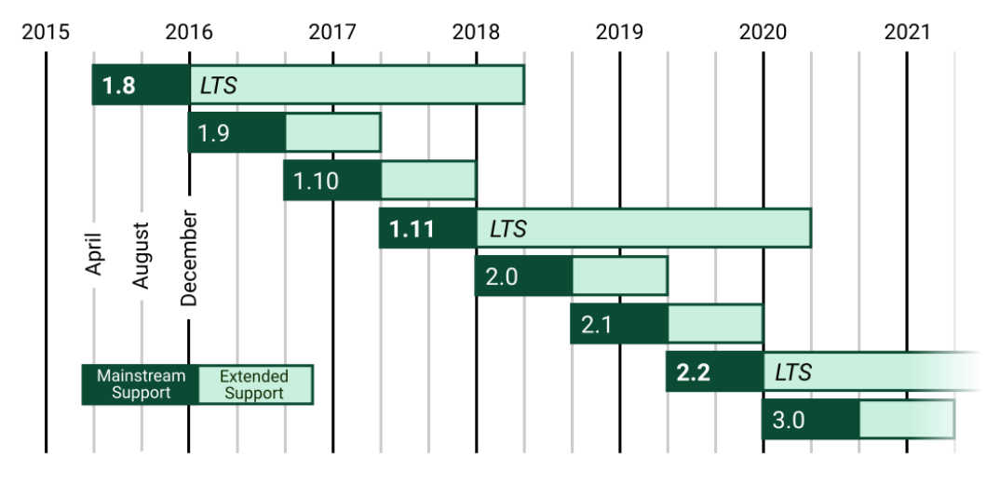
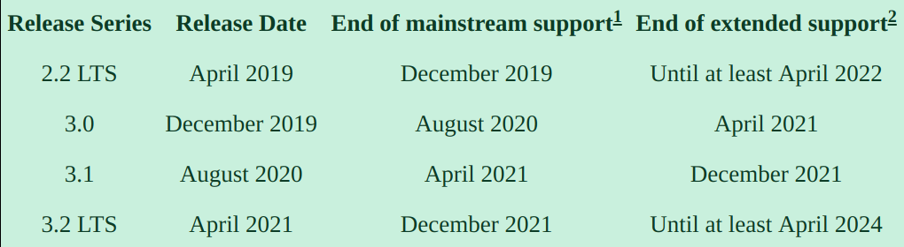

Course Intro
Created for
Iva E. Popova, 2018-2019:

About the course
About the course
Course Mail Account
progressbg.python.course@gmail.comCourse calendar
Prerequisites: setup python, pipenv, git, django
Prerequisites: setup python, pipenv, git
python 3
- We will work with python 3.
- Any version from 3.4 and above will be perfect for Django:
- What Python version can I use with Django?
- If you do not want to change your global python interpreter, you can use pyenv+pipenv
- Note that pyenv is not supported on Windows.
pipenv
- Installing Pipenv
- If you want the pipenv for your project to reside in the project folder itself (in .venv/), instead of the default $HOME location, set the environment variable
PIPENV_VENV_IN_PROJECT=1
git
Verify the installations and install Django
# navigate to your course working folder
cd ProgressBG-VC-Django-Slides-Labs/
# Create a new project using Python 3.7, specifically:
pipenv --python 3.7
# Activate the virt. environment:
pipenv shell
# check python version
python -V
# install Django
pipenv install Django
# check Django version
# both commands should return same version
python -m django --version
django-admin --version
More on installing Django
Django Supported Versions
{kind=link}
Django versions roadmap
{kind=link}
Exercises
Creating a bare-bone Django project
# navigate to your course working folder
cd ProgressBG-VC-Django-Labs/
# create the "mysite" django project
django-admin startproject mysite
# start the built-in dev server:
cd mysite/
python manage.py runserver
# test it - open >>http://127.0.0.1:8000/<<
Upload to github
- Create a new repository on GitHub
- Initialize the local directory as a Git repository
# navigate to the project folder
cd ProgressBG-VC-Django-Slides-Labs/
# Initialize the local directory as a Git repository.
git init
# ignore files you don't want to track
# you can search for ready "django .gitignore" files to use
vi .gitignore
# Add the files in your new local repository
git add .
# Commit the files and set commit message
git commit -am'Initial'
# add the >>remote repository URL<< where your local repository will be pushed.
git remote add origin remote/repository/URL
# Push the changes in your local repository to GitHub.
git push -u origin master
Reference: Adding an existing project to GitHub using the command line
These slides are based on
customised version of
framework